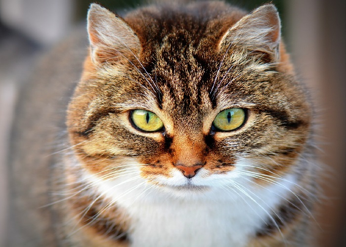

Бонифаций
Возраст: около 6 месяцев
Порода: нет
Болезни: нет
Статус: ищет хозяина
Дружелюбный, ласковый, ручной.
Возраст ~ 6 месяцев
С другими котами в дружных отношениях. Можно взять в пару к домашнему питомцу, или в паре с
сестричкой Лаской.